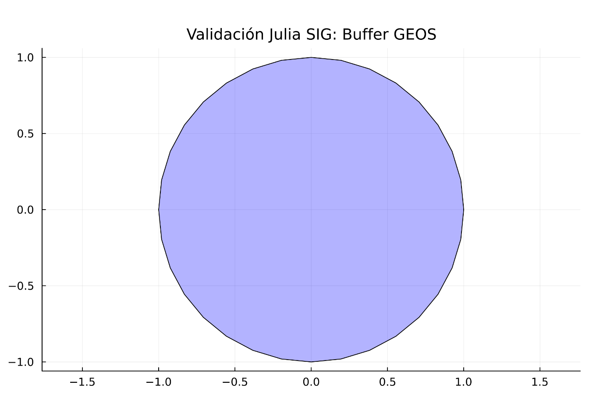

B.1 Configuración inicial del entorno (Pre-flight)
Para automatizar el soporte de gráficos y capturas sin configurar cada archivo individualmente, ejecute estos comandos en la terminal del contenedor contenedor_sig_unal inmediatamente después de iniciar los servicios con docker compose up -d:
Tabla B.1: Comandos de configuración global del contenedor
Configura la ruta de Chrome para todo el sistema R de forma persistente. (si falla usa /usr/lib/R/etc/Rprofile.site. El R.home("etc") en nuestro sistema es /usr/lib/R/etc)
Habilita el modo headless y evita bloqueos de sandbox al ejecutar como root. (si falla usa /usr/lib/R/etc/Rprofile.site. El R.home("etc") en nuestro sistema es /usr/lib/R/etc)
/usr/bin/google-chrome
Google Chrome se necesita para compilar código mermaid dentro de Quarto. Ejecute el siguiente comando para comprobar si Google Chrome web browser está instalado correctamente:
/usr/lib/R/etc/Rprofile.site /etc/R/Rprofile.site
La imagen cargada del archivo tar ya incluye los programas descritos a continuación en Tabla B.2. Esta tabla se deja como referencia para facilitar una futura compilación. La tabla descrita líneas abajo servirá para complementar el archivo Dockerfile.
Tabla B.2: Comandos de configuración global del contenedor ya incluidos en la imagen cargada a partir del archivo .tar
Instala el motor de captura de widgets HTML y mapas de Leaflet.
Librerías Python
pip3 install selenium
Habilita la automatización de capturas para visualizaciones dinámicas de Python.
Librerías Julia
julia -e 'using Pkg; Pkg.add(["FileIO", "ImageIO"])'
Soporte esencial para procesar y exportar gráficos en el ecosistema Julia.
Ventajas de esta configuración
Al usar el archivo Rprofile.site, hemos logrado que:
Limpieza: Sus archivos .qmd solo contendrán código de análisis geográfico, eliminando bloques de configuración de sistema repetitivos.
Persistencia: Cualquier usuario o script que inicie una sesión de R dentro de este contenedor heredará automáticamente la capacidad de tomar capturas de pantalla.
Compatibilidad: Quarto detectará webshot2 y el navegador Chrome de forma nativa al renderizar a PDF.
Notas de implementación
¿Por qué Google Chrome y no Chromium?
En distribuciones basadas en Ubuntu 22.04 o superiores, el comando apt install chromium-browser instala una versión ligada a Snap, la cual no puede ejecutarse dentro de un contenedor Docker por restricciones de seguridad del kernel. La instalación manual del paquete .deb de Google Chrome garantiza un binario funcional en /usr/bin/google-chrome.
Importancia de ImageIO y FileIO en Julia
En Julia, estas librerías actúan como los “drivers” de imagen. Sin ellas, aunque el código genere un mapa o gráfico, Quarto no podrá convertirlo a un formato que LaTeX entienda (como PNG), resultando en bloques vacíos en el PDF final.
B.2 Introducción a la infraestructura de datos
Este anexo constituye la guía técnica para la gestión del entorno de desarrollo instalado. Es decir, información que describe y detalla los contenedores instalados (instalación opción A), su estructura y funcionamiento, así mismo como la descripción y detalles adicionales de las dos instalaciones de QGIS (Instalación Opción B)
Contenedores instalados (Instalación Opción A)
Siguiendo los pasos detallados en Capítulo 2 para instalar los contenedores Docker, en resumen, ellos contendrán:
Un contenedor contenedor_sig_unal correspondiente a la imagen image_sig_unal:final el cual contendrá las siguientes herramientas:
docker exec contenedor_sig_unal R -e "cat(whitebox::wbt_version())"
Verifica que los binarios de WhiteboxTools están instalados y accesibles.
10
docker exec contenedor_sig_unal R -e "library(httpgd); print('Visor OK')"
Verifica que el motor gráfico para VSCode está listo en el puerto 8787.
Configuración de puertos y conectividad
Para que su computadora (Host) pueda comunicarse con los servicios dentro del contenedor, hemos diseñado un sistema de “puentes” o mapeo de puertos. Esto evita conflictos si ya tiene instalados otros servidores de bases de datos o Jupyter en su PC.
Servicio
Puerto en su PC (Host)
Puerto en Contenedor
Propósito
Acceso / Conexión
Jupyter Lab
8889
8888
Programación y Notebooks
http://localhost:8889
Visor R (httpgd)
8788
8787
Gráficos de R y VSCode
http://localhost:8788
PostGIS (DB)
5434
5432
Base de Datos Espacial
localhost:5434
🔑 Credenciales de la base de datos
Utilice estos datos para configurar sus conexiones en QGIS, ArcGIS Pro o mediante código (R/Python/Julia):
Base de Datos:sig_db_unal
Usuario:profe_unal
Contraseña:geomatica2025
Host:localhost
Puerto:5434
Host Interno:db-postgis (Use este nombre únicamente para conexiones dentro de sus scripts).
Lógica de arquitectura (Dockerfile y docker-compose)
La configuración del entorno se ha “blindado” técnicamente para garantizar la estabilidad:
En el Dockerfile: Se usan las instrucciones EXPOSE 8888 y EXPOSE 8787. Esto le avisa a Docker que el contenedor tiene dos “puertas” abiertas internamente. Al fijar httpgd.port = 8787, nos aseguramos de que el visor de gráficos de R no pelee con Jupyter por el mismo canal.
En el Docker-Compose:
8889:8888: Permite que este curso conviva con otras instalaciones de Jupyter (que suelen usar el 8888).
8788:8787: Habilita la conexión independiente de VSCode al visor de gráficos de R.
5434:5432: Evita el choque con bases de datos locales (Postgres suele usar el 5432 o 5433).
Guía de acceso: El concepto de “lados”
Es fundamental entender desde dónde está intentando conectar:
🌐 Desde afuera (Su PC / Host)
Es lo que usted configura en su navegador o en QGIS. Usted ve los puertos mapeados: * Jupyter/Notebooks: http://localhost:8889 (usando el token geomatica2025). * Base de Datos (QGIS/DBeaver): Host: localhost, Puerto: 5434.
🐳 Desde adentro (El Contenedor)
Sus scripts de Python, R y Julia no saben que existe un mapeo externo. Dentro de su “casa” Docker, nada ha cambiado: * PostGIS: El código debe buscar el puerto estándar 5432 y el host db-postgis. * httpgd: El servidor de gráficos sigue escuchando en el puerto interno 8787.
Tip de Conexión
Si intenta conectar QGIS usando el puerto 5432 y falla, recuerde que el “puente” hacia el contenedor se construyó específicamente sobre el puerto 5434.
Resumen de la infraestructura instalada
Componente
Versión / Estado
Detalles Técnicos
R Engine
4.3.3 (Angel Food Cake)
Puente JuliaConnectoR y visor httpgd configurados.
Julia Stack
v1.10.x
ArchGDAL 3.12.1 operativo mediante enlaces simbólicos.
Python Stack
3.12.x
GeoPandas, PyTorch y drivers psycopg2 listos.
Base de Datos
PostGIS (Noble)
Host interno db-postgis con extensión espacial activa.
Visualización
Dual Mode
Puertos 8788 (R/Julia Plots) y 8889 (Jupyter Lab).
Persistencia
Volúmenes Docker
Mapeo bidireccional en /home/rstudio/work confirmado.
Cirugía SSL
✅ Aplicada
Compatibilidad OpenSSL 3.0 (Sistema) vs 3.3 (Julia).
B.3 Localización de archivos y persistencia
En el contenedor, su carpeta del equipo local se encuentra vinculada a la ruta /home/rstudio/work. * Cualquier archivo guardado en esa ruta dentro de Jupyter aparecerá en su carpeta de Windows. * Se recomienda organizar su trabajo en las subcarpetas: notebooks, scripts, y data. * La carpeta imagenes (sin tílde y provista para las imágenes usadas en los archivos Quarto) debe residir también en esta ruta para un renderizado correcto.
Persistencia de Datos
Si su contenedor se apaga o se reinicia, los datos de su base de datos PostGIS y los datos almancenados en /home/rstudio/workno se pierden. El volumen nombrado actúa como un disco duro externo que sobrevive a cualquier caída del sistema.
B.4 Cargar los contenedores dentro de VSCode
Para una experiencia de desarrollo profesional, conecte VSCode directamente al contenedor:
Inicie Docker Desktop
En el “PowerShell” de windows ubíquese en la carpeta donde instaló los contenedores (ver Sección D.5)
Ejecute el comando: docker compose up -d
Abra VSCode
Instale (local) la extensión Dev Containers
Acceda a la paleta de comandos con Ctrl + Shift + P, escriba (o seleccione) Dev Containers: Attach to Running Container…, y seleccione el contenedor contenedor_sig_unal (imagen image_sig_unal).
Abra la carpeta /home/rstudio/work (esa carpeta corresponde a la carpeta local en dónde instaló los contenedores)
Una vez conectado “dentro” del contenedor, debe habilitar/instalar las extensiones (‘Install in Container’). Vea el listado completo en Sección F.6.
B.5 Inicialización del visor gráfico (solo una vez por sesión)
Para que los gráficos de R (y los puentes de Python/Julia) se visualicen correctamente en VSCode, debe inicializar el dispositivo gráfico. En su terminal de R, ejecute:
# Lanza el servidor de gráficos httpgdhttpgd::hgd()
Acceso al Visor: VSCode debería abrir automáticamente una pestaña con el visor. Si esto no sucede o prefiere usar su navegador externo (Chrome/Edge), acceda a la dirección: http://127.0.0.1:8788.
Nota sobre Puertos: Aunque el comando en R pueda imprimir una URL interna con el puerto 8787 o un token aleatorio, ignore esa dirección. Gracias a nuestro archivo docker-compose.yml, el puerto 8788 de su Windows está “cableado” permanentemente al visor, eliminando la necesidad de buscar tokens o puertos dinámicos. (xxx)
B.6 Ingreso a Jupyter Lab
Abra su navegador y acceda a: http://localhost:8889 * Contraseña/Token: (Si se solicita) geomatica2025 * Persistencia: Todo archivo guardado en la carpeta /home/rstudio/work aparecerá automáticamente en su carpeta de Windows. No guarde nada fuera de esa ruta, o se perderá al cerrar el contenedor.
Si la url anterior no funciona, puede verificar cuál url usa actualmente el contenedor, la cual aparece al final del log después de ejecutar el siguiente comando:
docker logs contenedor_sig_unal
Alternativa: Puede iniciar/reiniciar el servidor de Jupyter Lab en la url http://127.0.0.1:8889/lab?token=geomatica2025. Use el siguiente comando ejecutado desde el terminal de VSCode:
Al ingresar, se encontrará con el centro de mando de sus kernels, donde podrá elegir entre R, Python o Julia para sus Notebooks:
Figura B.1: Interfaz de JupyterLab configurada para el laboratorio.
La Carpeta ‘work’ y el Espejo de Datos
En el panel izquierdo de la Figura B.1, la carpeta /home/rstudio/work/ es el espejo de su directorio local en Windows. Gracias a la configuración de volúmenes en el archivo docker-compose.yml, existe un puente directo: todo cambio realizado en Jupyter se refleja en su disco duro y viceversa, garantizando que su trabajo no se pierda al apagar el contenedor.
B.8 Compilación de la guía completa o documentos individuales
La guía del curso está organizada a partir de un archivo orquestador_quarto.yml, el cual contiene una referencia explícita a cada uno de los archivos Quarto (.qmd) que definen los capítulos, las presentaciones, los talleres y los anexos. Este archivo centraliza la organización y el formato de la guía tanto en PDF como en HTML.
Compilación del proyecto completo
Si desea compilar la guía completa del curso y generar todos los formatos, simplemente ejecute el comando quarto render en la carpeta raíz (donde se encuentra el archivo _quarto.yml):
# Desde la carpeta raíz donde reside el archivo '_quarto.yml'quarto render
Compilación de archivos individuales
En ocasiones, querrá trabajar en un solo capítulo sin procesar el libro entero. Para compilar un archivo específico (ej. archivo.qmd) de manera independiente y evitar que Quarto aplique las reglas de numeración y referencias del proyecto global, siga estos pasos:
Renombrar temporalmente el orquestador: Cambie el nombre de _quarto.yml a _quarto.yml.back. Esto hace que Quarto trate al archivo como un documento “solitario”.
Ejecutar el renderizado específico:
Generar todos los formatos (HTML y PDF):
quarto render archivo.qmd --to all
Generar solo formato HTML:
quarto render archivo.qmd --to html
Generar solo formato PDF:
quarto render archivo.qmd --to pdf
Notas de estudio y personalización
¡Personaliza tu aprendizaje!
En Quarto, puedes agregar tus propias notas de estudio usando la sintaxis de “callouts”. Recuerda que este documento está en proceso de construcción y sufrirá cambios permanentes hasta terminar el curso.
Puedes buscar ayuda en Internet para personalizar la apariencia de tus notas. La sintaxis básica es:
::: {.callout-tip icon="true"}### ¡Escribe tu nota aquí!Este es un espacio para tus observaciones personales y recordatorios.:::
B.9 Mapeo de Capacidades SIG
Es vital entender que, aunque usemos lenguajes distintos, todos “beben” de las mismas librerías de bajo nivel instaladas en nuestra imagen base de OSGeo:
Operación
R (sf / terra)
Python (GeoPandas)
Julia (ArchGDAL)
Motor de Sistema
Lectura de Datos
st_read() / rast()
read_file() / open()
ArchGDAL.read()
GDAL
Buffers / Geometría
st_buffer()
.buffer()
LibGEOS.buffer()
GEOS
Reproyección
st_transform()
.to_crs()
ArchGDAL.reproject()
PROJ
B.10 Verificación de Conectividad Multilenguaje
Nota técnica: Dentro de la red de Docker, el host es db-postgis.
import psycopg2import geopandas as gpdimport fionaimport matplotlib.pyplot as pltfrom shapely.geometry import Pointprint("--- Inicio de Verificación de Python SIG ---")
--- Inicio de Verificación de Python SIG ---
# 1. Prueba de conexión a la base de datos PostGIStry: conn = psycopg2.connect( host="db-postgis", dbname="sig_db_unal", user="profe_unal", password="geomatica2025" )print("✅ Conexión a PostGIS: Exitosa") conn.close()exceptExceptionas e:print(f"❌ Error de conexión a PostGIS: {e}")
✅ Conexión a PostGIS: Exitosa
# 2. Prueba de Fiona y drivers GDALtry: drivers =len(fiona.supported_drivers)print(f"✅ Fiona operativo: {drivers} drivers GDAL detectados")exceptExceptionas e:print(f"❌ Error en Fiona/GDAL: {e}")
✅ Fiona operativo: 17 drivers GDAL detectados
# 3. Prueba de GeoPandas, Motores GEOS y Visualizacióntry:# Creamos un punto y su buffer (GEOS) punto = Point(0, 0) buffer_geom = punto.buffer(1.0)# Creamos GeoDataFrames para graficar gdf_buffer = gpd.GeoDataFrame({'geometry': [buffer_geom]}, crs="EPSG:4326") gdf_punto = gpd.GeoDataFrame({'geometry': [punto]}, crs="EPSG:4326")print(f"✅ GeoPandas {gpd.__version__}: Operativo")print(f"✅ Motores GEOS/Shapely: Verificados")# Generación del Plot Espacial con Ejes y Cuadrícula fig, ax = plt.subplots(figsize=(6, 6))# Graficamos el buffer gdf_buffer.plot(ax=ax, color='lightgreen', edgecolor='green', alpha=0.4, label='Buffer')# Graficamos el punto original (en rojo) gdf_punto.plot(ax=ax, color='red', markersize=50, zorder=5, label='Centro')# Configuración de estilo consistente (Ejes y Grilla) ax.set_title("Validación Python SIG: Buffer GEOS") ax.set_xlabel("Longitud") ax.set_ylabel("Latitud") ax.grid(True, linestyle='--', alpha=0.7) # Cuadrícula activada ax.set_aspect('equal') # Proporción 1:1 para evitar deformación plt.show()print("✅ Visualización GeoPandas: Mapa generado con éxito")exceptExceptionas e:print(f"❌ Error en el stack espacial de Python: {e}")
print("--- Verificación Finalizada ---")
--- Verificación Finalizada ---
library(DBI)library(RPostgres)library(sf)
Linking to GEOS 3.12.1, GDAL 3.8.4, PROJ 9.4.0; sf_use_s2() is TRUE
library(terra)
terra 1.8.93
Attaching package: 'terra'
The following object is masked from 'package:grid':
depth
cat("--- Inicio de Verificación de R-Spatial ---\n")
--- Inicio de Verificación de R-Spatial ---
# 1. Prueba de conexión a la base de datos PostGIStryCatch({ con <-dbConnect( RPostgres::Postgres(), host ="db-postgis", dbname ="sig_db_unal", user ="profe_unal", password ="geomatica2025" )cat("✅ Conexión a PostGIS: Exitosa\n")dbDisconnect(con)}, error =function(e) {cat("❌ Error de conexión a PostGIS:", conditionMessage(e), "\n")})
✅ Conexión a PostGIS: Exitosa
# 2. Prueba de Motores de Sistema y Visualización (sf)tryCatch({ conf <-sf_extSoftVersion()cat(paste0("✅ sf operativo. Motores detectados:\n"," - GDAL: ", conf["GDAL"], "\n"," - GEOS: ", conf["GEOS"], "\n"," - PROJ: ", conf["PROJ"], "\n"))# Creamos el punto y el buffer punto <-st_point(c(0, 0)) buffer_geom <-st_buffer(punto, dist =1)cat("✅ Prueba geométrica (GEOS): Buffer creado correctamente\n")# Generación del Plot Espacial# Usamos st_geometry para graficar solo la formaplot(st_geometry(buffer_geom), col ='lightblue', border ='blue', main ="Validación R-Spatial: Buffer GEOS",axes =TRUE,graticule =TRUE)# Añadimos el punto original para referenciaplot(st_geometry(punto), add =TRUE, col ='red', pch =20)cat("✅ Visualización sf: Mapa generado con éxito\n")}, error =function(e) {cat("❌ Error en el stack sf/GEOS:", conditionMessage(e), "\n")})
# #| eval: falsej_plot('using LibPQusing LibGEOSusing ArchGDALusing Plotsprintln("--- Inicio de Verificación de Julia SIG ---")# 1. Prueba de conexión a la base de datos PostGIStry conn = LibPQ.Connection("host=db-postgis dbname=sig_db_unal user=profe_unal password=geomatica2025") println("✅ Conexión a PostGIS: Exitosa") close(conn)catch e println("❌ Error de conexión a PostGIS: ", e)end# 2. Verificación de LibGEOS y Visualización de Geometríatry # Creamos un punto y le aplicamos un buffer de 1.0 unidades # Esto valida la integración de Julia con la librería GEOS del sistema punto = LibGEOS.readgeom("POINT (0 0)") buffer_geom = LibGEOS.buffer(punto, 1.0) println("✅ LibGEOS operativo: Motores geométricos verificados") # Graficamos el objeto del buffer # fillcolor y alpha ayudan a ver que es un polígono real plt = plot(buffer_geom, title="Validación Julia SIG: Buffer GEOS", fillcolor=:blue, fillalpha=0.3, aspect_ratio=:equal, legend=false) # display() es OBLIGATORIO para mostrar gráficos dentro de bloques try/catch display(plt) catch e println("❌ Error en LibGEOS o Visualización: ", e)end# 3. Verificación de ArchGDAL (Usando llamada de bajo nivel)try # Accedemos directamente al motor de C para evitar errores de exportación gdal_ver = ArchGDAL.GDAL.gdalversioninfo("--version") println("✅ ArchGDAL operativo (Versión GDAL: $gdal_ver)")catch e println("❌ Error en ArchGDAL: ", e)endprintln("--- Verificación Finalizada ---")')
Starting Julia ...
julia> using LibPQ
julia> using LibGEOS
julia> using ArchGDAL
julia> using Plots
julia> println("--- Inicio de Verificación de Julia SIG ---")
# 1. Prueba de conexión a la base de datos PostGIS
--- Inicio de Verificación de Julia SIG ---
julia> try
conn = LibPQ.Connection("host=db-postgis dbname=sig_db_unal user=profe_unal password=geomatica2025")
println("✅ Conexión a PostGIS: Exitosa")
close(conn)
catch e
println("❌ Error de conexión a PostGIS: ", e)
end
# 2. Verificación de LibGEOS y Visualización de Geometría
✅ Conexión a PostGIS: Exitosa
julia> try
# Creamos un punto y le aplicamos un buffer de 1.0 unidades
# Esto valida la integración de Julia con la librería GEOS del sistema
punto = LibGEOS.readgeom("POINT (0 0)")
buffer_geom = LibGEOS.buffer(punto, 1.0)
println("✅ LibGEOS operativo: Motores geométricos verificados")
# Graficamos el objeto del buffer
# fillcolor y alpha ayudan a ver que es un polígono real
plt = plot(buffer_geom,
title="Validación Julia SIG: Buffer GEOS",
fillcolor=:blue,
fillalpha=0.3,
aspect_ratio=:equal,
legend=false)
# display() es OBLIGATORIO para mostrar gráficos dentro de bloques try/catch
display(plt)
catch e
println("❌ Error en LibGEOS o Visualización: ", e)
end
# 3. Verificación de ArchGDAL (Usando llamada de bajo nivel)
✅ LibGEOS operativo: Motores geométricos verificados
julia> try
# Accedemos directamente al motor de C para evitar errores de exportación
gdal_ver = ArchGDAL.GDAL.gdalversioninfo("--version")
println("✅ ArchGDAL operativo (Versión GDAL: $gdal_ver)")
catch e
println("❌ Error en ArchGDAL: ", e)
end
✅ ArchGDAL operativo (Versión GDAL: GDAL 3.12.1 "Chicoutimi", released 2025/12/12)
julia> println("--- Verificación Finalizada ---")
--- Verificación Finalizada ---

# Validación de Motores SIG y ConectividadusingLibPQ, LibGEOS, ArchGDAL, Plots# 1. Prueba de conexión a PostGIStry conn = LibPQ.Connection("host=db-postgis dbname=sig_db_unal user=profe_unal password=geomatica2025")println("✅ Conexión a PostGIS: Exitosa")close(conn)catch eprintln("❌ Error de conexión: ", e)end# 2. Prueba de Motores Geométricos (GEOS)try punto = LibGEOS.readgeom("POINT (0 0)") buffer_geom = LibGEOS.buffer(punto, 1.0)println("✅ Motores geométricos operativos (GEOS)")# Visualización del Buffer plt =plot(buffer_geom, title="Validación SIG: Buffer GEOS", fillcolor=:blue, fillalpha=0.3, aspect_ratio=:equal)display(plt)catch eprintln("❌ Error en motores geométricos o gráficos: ", e)end